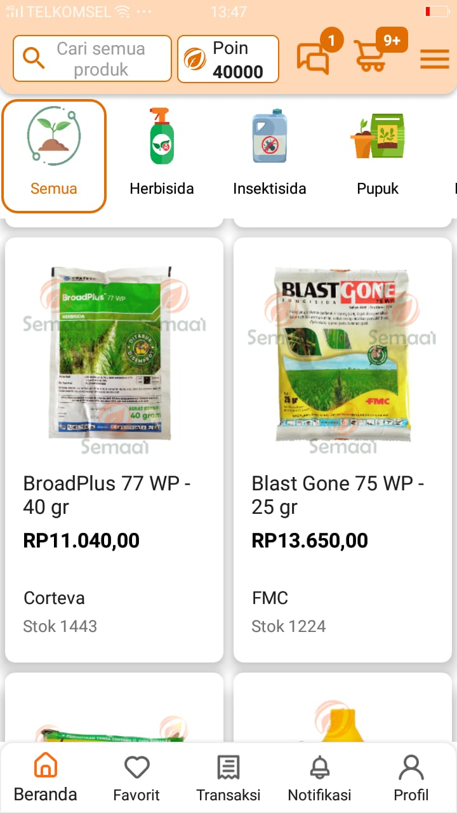
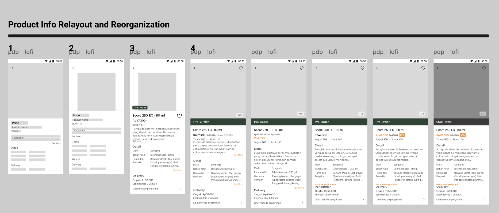
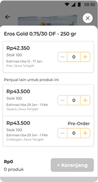
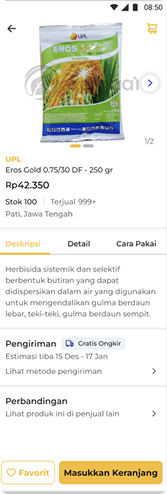

Revamping the Semaai PDP
for farmers in rural Java.
A product detail page revamp for elderly and rural users in Indonesia. We cut churn on the PDP by 25% and helped the company hit its first CM4 profitability milestone.
Role
Product Design Lead & IC
Timeline
2024 · 12 weeks
Platform
Mobile App (Android)
Industry
Agritech / E-commerce
Churn rate
−25%
On the product detail page
Add-to-cart
+45%
Users proceeding to checkout
GMV lift
+60%
Driven by PDP overhaul
Milestone
CM4
First-ever profitability marker
01 Context
Why the PDP mattered, and why the old one wasn't working.
The Challenge
Semaai is an agritech platform for Indonesian farmers. Most of our users are middle-aged or elderly, with limited digital literacy and patchy connectivity. When I looked at the funnel, more than 58% of users who opened a product detail page didn't go on to checkout. The PDP was where we were losing the people who had already shown clear intent to buy.
The Mandate
As Product Design Lead, I was asked to run a full revamp of the PDP. The goal was to lift checkouts and GMV without alienating farmers who already trusted the app's simple, familiar layout. Whatever we shipped had to work on low-end Android phones, over 3G, with large touch targets and high contrast.
Funnel snapshot
Before revamp vs after
The biggest drop in the old funnel was between viewing the PDP and adding to cart. After the revamp, that same step turned into our biggest gain.
02 Process
Four stages. Each one built on what the last one found.
Heuristic Evaluation
Stage 01I walked through the full flow from homescreen to PDP, which is how most users reach the product page (search is a distant second). I flagged every friction point I ran into: unclear icons, too many competing CTAs, stock and delivery info buried below the fold.
Cross-Functional Brainstorm
Stage 02I brought engineering, product, research, business and ops into the room to map out user stories together. Five recurring problems came up independently across different teams, which told us where to focus.
Field Research in Java
Stage 03I visited villages across Java and spent time with farmers during their actual buying routine. I ran interviews, watched them hold the phone, and saw where they got stuck, where they squinted, where they asked a neighbour for help.
Revamp & Ship
Stage 04Lo-fi wireframes, then hi-fi prototypes, then moderated usability testing, then handoff. Every design decision traced back to something specific from stages 1 to 3.
03 The Existing Product
Audit of v0

Five issues came out of the audit. Each one showed up in the data as a drop before Add-to-Cart.
Issue 01
Too many CTAs on one screen
“Pre-Order”, “Add to Cart” and “Compare” were all competing for attention in the same area.
Issue 02
Delivery time and stock info buried
Farmers plan by season. If they can't see when it arrives or whether it's in stock, they leave.
Issue 03
Long descriptions, no expiry date
Big walls of copy with nothing scannable, and a missing piece of info they actually needed.
Issue 04
No image zoom and no seller trust signals
Users couldn't inspect the product properly or check if the seller was trustworthy.
Issue 05
Confusing quantity flow
Unclear icons and too many taps just to buy more than one of something.
04 Field Research
Java Island · In-depth interviewsMethodology
- → Direct village visits across Java
- → Diverse farmer participants by crop & age
- → Open-ended in-depth interviews
- → Contextual observation during actual buying
Participant snapshot
18
Farmers
6
Villages
45–70
Age range


Synthesis board · affinity mapping

Key Design Findings
Typography
Bigger text, always.
Between poor lighting in the field and older eyes, farmers asked for noticeably larger body text. Not just a little bigger. Big.
Contrast
Strong color contrast.
Price, product name and the primary CTA need to jump off the screen. Subtle grays and soft accents weren't getting read.
Copy
Cut the heavy text.
Long descriptions got skipped entirely. Short, scannable bullets, only the parts people actually need to decide.
05 Design Principles
Layout & structure rules01
Hierarchy First
Name, price, stock and CTA need to land first. Nothing else competes in that area above the fold.
02
Progressive Disclosure
Application tips, benefits, and reviews sit in collapsible sections, available when people want them and out of the way otherwise.
03
One Clear CTA
A single high-contrast Pre-Order / Add-to-Cart button that stays visible as people scroll.
04
Trust Signals
Seller verification badge, ratings and expiry date, all surfaced near where the buying decision happens.
06 Wireframes
Lo-fi structural exploration
What changed
- Simplified header: just product name, price and Pre-Order. Extra icons removed.
- Stock moved up next to the primary CTA so availability is visible before people commit.
- Collapsible sections for benefits, usage instructions and reviews.
- Persistent CTA pinned to the bottom so the main action is always within reach of a thumb.
07 High Fidelity
Shipped interface

Product Hero
Full-bleed image with tap-to-zoom, large product name and price. Legible at arm's length, even in bright outdoor light.

Comparison Sheet
Reworked bottom sheet with cleaner cards, a numeric quantity input, a persistent Add-to-Cart, and the quantity kept between opens.
08 Before / After
- ✕ Small text that was hard to read outdoors
- ✕ Stock and delivery info buried further down
- ✕ Too many buttons competing for attention
- ✕ No way to tell if the seller was trustworthy

- ✓ Big, high-contrast text you can read at a glance
- ✓ Stock and delivery shown right next to the button
- ✓ One main action that's always on screen
- ✓ Verified seller badge and ratings up front
The
Impact.
"Churn on the PDP dropped by 25%, engagement went up 30%, and GMV grew 60%. The PDP work also helped the company hit its first CM4 milestone."
The revamp didn't just move one metric. It showed that user-centered design could be a real profitability lever for rural agritech. The patterns became the baseline we used for every other screen in the app.
Takeaways.
// 01
Show up in person.
Analytics told us what was broken. Field research told us why. You can't build real empathy for farmers from a dashboard.
// 02
Accessibility is conversion.
Bigger text and higher contrast were mainly for our older users, but they ended up driving a 60% lift in GMV.
// 03
One CTA beats five.
Fewer options made the decision easier. Every CTA we removed paid us back in checkouts.